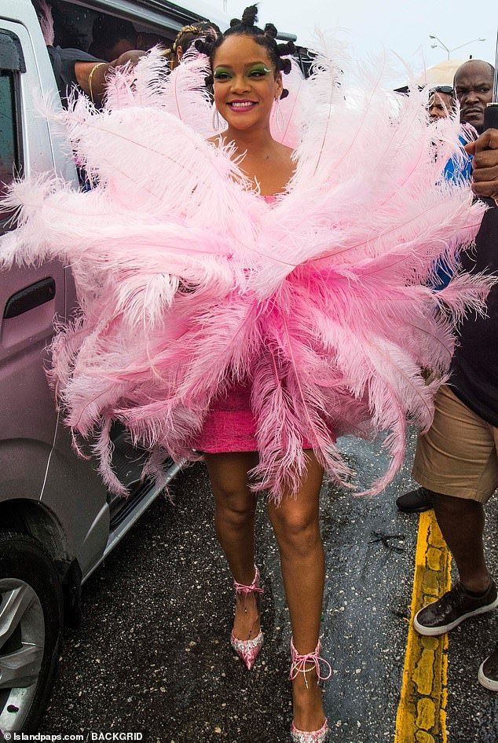
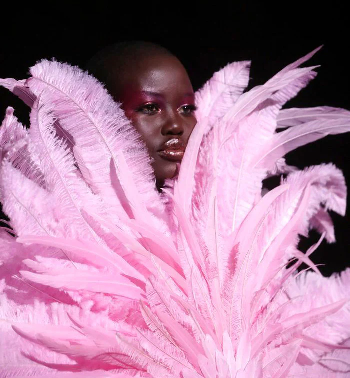

Collectiestuk · Object 2018
De Jurk

Mode · Museum · Collectie
Zijden korsetjurk met struisvogelveren · 2018
Scroll om te ontdekken
| Ontwerper | David Laport (geb. 1986), Amsterdam |
| Jaar | 2018 |
| Materiaal | Zijde, struisvogelveren |
| Techniek | Korsette constructie, handgenaaid |
| Instelling | Amsterdam Museum |
De jurk is afkomstig van de openingsshow van Amsterdam Fashion Week 2018. David Laport, door De Volkskrant uitgeroepen tot 'modetalent van het jaar' (2015), ontwerpt voor artiesten als Solange Knowles, Sia en Rihanna. Rihanna droeg deze roze struisvogelvederjurk op het Crop Over Festival in Barbados, waarna de jurk als 'flamingo jurk' wereldwijd viral ging op social media.



De flamingo jurkSociale media · Barbados · 2018
David Laport ontwerpt de zijden korsetjurk in zijn Amsterdams atelier struisvogelveren in roze wit kleurverloop, vakmanschap op zijn hoogst.
Rihanna draagt de jurk op het Crop Over Festival in haar geboorteland. De veren exploderen om haar heen terwijl ze door de stoet schrijdt.
Foto's en video's gaan wereldwijd viral. Social media doopt de jurk 'de flamingo jurk'. Miljoenen impressies op Instagram, Twitter en TikTok.
De jurk maakt deel uit van de vaste collectie van het Amsterdam Museum bewijs van de culturele betekenis van Nederlands modeontwerp op wereldschaal.

David Laport · Modeontwerper · Amsterdam
Amsterdams modeontwerper · Avant-garde · Theatraal
David Laport is een van de meest opvallende stemmen in de hedendaagse Nederlandse mode. Zijn ontwerpen zijn theatraal, technisch verbluffend en altijd doordrenkt van een eigenaardig gevoel voor humor en drama.
Opgeleid aan het AMFI (Amsterdam Fashion Institute), heeft Laport een unieke designtaal ontwikkeld die grenst aan haute couture maar geworteld blijft in een avant-garde sensibiliteit. Zijn werk verkent de relatie tussen het lichaam, het kledingstuk en de ruimte eromheen.
De zijden korsetjurk met struisvogelveren is een kenmerkend voorbeeld van zijn stijl: een strak, architectonisch corsage dat uitbarst in een explosie van weelderige veren drama als kleedkeuze, schoonheid als statement.